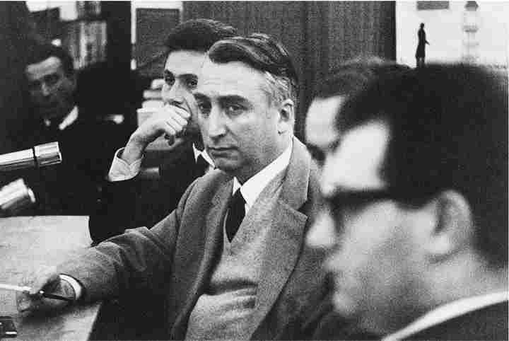

1963年，巴特在《泰晤士报·文学增刊》和美国的《现代语言笔记》杂志上发表了若干文章。他告诉读者，在法国有两种批评，一种是枯燥的实证型的学院派批评，另一种是充满活力、多样化的阐释型批评（不久后就被冠以“新批评”的名号），从事阐释型批评的评论家对于论证作品的具体信息不感兴趣，而是致力于以现代理论或哲学的视角来探讨作品的意义。次年，这些论战性的文章被收录在《文艺批评文集》中结集出版，学术界对此颇为恼火。《世界报》（1964年3月16日那一期）刊登了由索邦大学教授雷蒙德·皮卡尔所写的书评，书评对这本书的其他方面不予理会，全力批评这种“徒劳且不负责任的诽谤行为”，认为这或许会给一位不知情的外国读者留下关于法国大学的错误印象。
但或许这种印象不完全是错误的。在法国的大学体系中，教师要想升职，就必须在国家博士论文（篇幅较长的学术性论文，很少能在十年之内完成）上取得明显进展，而这种论文的目标是掌握坚实的文献知识。这种研究并不鼓励在方法论、理论思考或非正统的阐释方面进行创新。在法国，那些对于推动和促进文学研究做出重大贡献的批评家大部分活跃在大学体系之外；他们为获得经济来源，或从事写作（让——保罗·萨特和莫里斯·布朗肖），或到国外教书（乔治·布莱、勒内·基拉尔、路易·马林、让——皮埃尔·理查德），或在特殊机构工作（巴特、热拉尔·热奈特、茨维坦·托多罗夫、吕西安·戈德曼），这些机构在任命他们担任教职时采取了其他标准。1968年后，大学里的这种情况有所改观，但在20世纪60年代早期，巴特对于两种批评所做的区分不无道理。
巴特对于学院派批评的不满主要在于两个方面。阐释型批评家在哲学或意识形态方面寻求盟友——存在主义、马克思主义、现象学、精神分析、符号学——而学院派批评家却声称自己保持客观，装作他们没有意识形态。在未经理论探讨的情况下，学院派批评声称自己知道文学的本质，并且以常识的名义，折衷地接受或者干脆拒绝具有意识形态倾向的批评所提出的一切观点。它拒绝弗洛伊德流派或者马克思主义的阐释，认为这些阐释过于夸大或牵强（巴特说，它本能地踩下了刹车），但它却不承认，拒绝阐释这一行为本身隐含着另一种心理学或社会学理论，而这种理论需要确切的表述。事实上，传统批评所秉持的温和的折衷主义是最肆无忌惮的意识形态，因为它声称自己知道什么时候其他方法是对的，同样也知道什么时候其他方法是错的。巴特最强烈反对的就是意识形态伪装成常识。
其次，巴特认为学院派批评拒绝接受的是内在阐释——这一点对于英美读者来说或许不太熟悉。学院派批评想要用作品之外的事实，比如作者所处的世界或者他的素材来源，来解释文学作品。由于这种批评把文学作品看作是对某个外在物的再生产，因此在某些情况下，如果它利用作者的过去来解释某个作品，它会接受精神分析解读，认为后者是合理的解读，但失于片面；如果它利用历史现实来解释作品，它也会承认马克思主义的解读。巴特认为，学院派批评不愿意接受的观点是，“阐释和意识形态可以在完全属于作品内部的某个领域内发挥作用”。巴特认为，使用理论语言来研究作品结构完全不同于试图在作品之外寻求解释的方法。一种内在解读可能会使用精神分析概念来说明作品的内在动力，但这完全不同于精神分析解读，后者试图把作者解释为作者心灵的产物。巴特说，法国的学院派批评对于内在分析持敌视态度，因为学院派批评把知识与因果分析联系在一起，同时也因为评估学生的知识比评估他们的阐释更加简单。学院派批评提倡的文学理论以作者的生平和时代为重要依据，这种做法适合测验和评分。
或许，皮卡尔会对他没有提及的另一篇文章《历史或文学》（收录在《论拉辛》中）同样感到恼火，这篇文章着重探讨了以拉辛为研究对象的几部批评著作的失败之处，其中就包括皮卡尔的博士论文《让·拉辛的职业生涯》——许多“令人钦佩的”作品都服务于“一项令人困惑的事业”，这篇论文就是其中之一（第167/172页）。巴特认为，致力于文学史研究的教授们痴迷于研究作者及其所作所为，却忽视了真正需要历史答案的问题——在拉辛所处的时代，文学功能或者文学制度有着什么样的历史？对于皮卡尔来说，“历史依然是——这一点是致命的——人物画的原始素材。”“如果想写文学史，人们必须放弃作为个人的拉辛，转向技巧、规则、仪式和集体心态等层面”，讨论这一时期文学生涯的整体模式（第154/159页、第167/172页）。当批评家专注于拉辛，把他本人的经历作为他创作的悲剧的源泉时，这实际上是一种阐释，而不是历史。这些批评家总是想“踩下刹车”，仿佛“这一假设所体现的怯弱和陈腐就足以为它提供合理依据”（第160/166页）。在联系作者和作品的时候，他们必须依赖一种心理学。在他们应该大胆宣布他们所依赖的心理学理论时，他们恰恰变得极度胆怯。
第166/171页
这种观点是皮卡尔无法接受的，他在名为《新批评还是新欺诈？》的小册子中清楚表明了这一点。借助次年出版的这本小册子，他与巴特展开了论争。他声称：“存在关于拉辛的真相，每个人都会同意这一点。尤其是依靠语言的确定性、心理统合力的潜在作用和文体类型的结构要求，耐心而谦逊的研究者能够提供无可辩驳的事实，这些事实在某种程度上决定了客观性的范围（从这些范围开始，他可以——非常谨慎地——冒险进行阐释）。” [9] 皮卡尔抨击了巴特在文章中所说的阐释型批评家，尤其是巴特本人的《论拉辛》，他试图与新批评带给文学研究的“威胁”以及带给清晰、连贯、合乎逻辑等原则的“威胁”作斗争。他提出了四条罪名：（1）巴特将印象主义与意识形态的教条结合在一起，对于拉辛的戏剧提出了某些不负责任、毫无根据的看法；（2）他的理论导致了一种相对主义，在这样的理论里，批评家什么话都说得出来，因为它只要求批评家承认他的观点的主观性；（3）巴特的品味极其糟糕，他在这些戏剧里注入了“持续纠缠、毫无节制、愤世嫉俗的性”，以至于“人们必须重读拉辛的作品才能说服自己，他笔下的人物不同于D.H.劳伦斯的人物”；（4）巴特使用了一套神秘的、伪科学的术语，以显示他的理论的严密程度，而事实上这种严密并不存在。
虽然皮卡尔令人信服地证明了，巴特关于拉辛人物的看法只适用于其中几个角色，但引起广泛关注并引发关于文学的强烈论争的，是皮卡尔的坚定立场，他要维护文化遗产，反对挑战正统的意识形态及其术语。看过那些热情赞颂《新批评还是新欺诈？》的书评，人们不难判断，在这些混乱但坚定的信念中，表现出两个深藏的原则：（1）国家文化遗产的荣耀取决于意义的确定性和历史的真相（人们所研究的拉辛，其意义不应该发生变化）；（2）质疑艺术家的自觉掌控或者忽视作者的意图就是要在总体上挑战主体把握自身和把握世界的能力。《世界报》上的一位作者公然提出之前巴特在《神话学》中曾经嘲讽过的资产阶级对待批评的态度（它的任务就是要宣布，拉辛就是拉辛）。这位辩论者写道，真正的批评就是为了要理解过去而去理解，“拒绝对过去加以修正……这种批评在拉辛本人中寻找拉辛 ，而不是要寻找拉辛在沾染了各种意识形态或术语之后所经历的变形。” [10] 在“拉辛就是拉辛”这样的表述中，巴特注意到，虽然这种同义反复只是虚幻的，因为不存在真正的拉辛，只有拉辛的不同版本，
《神话学》，第98页/《埃菲尔铁塔》，第61页

图7 难受、厌倦。
皮卡尔的攻击使得巴特成为新批评的代言人，卷入这一争端的人对他褒贬不一。在《批评与真实》中，巴特没有回应皮卡尔关于拉辛的不同看法，而是探讨了在这次争端中所提出的总体问题。他的主要观点是，皮卡尔所采用的依据（语言的确定性、心理统合力的潜在作用和文体类型的结构要求）本身就是基于某种意识形态的阐释，学院派批评家希望把这种意识形态改头换面，使其以理性的面貌出现。巴特认为，主要问题在于学院派批评不愿意承认语言的象征本质，尤其是语言的含混性和言外之意。很显然，当皮卡尔拒绝各种形式的言外之意时，他在竭力维持着某种规范性：“人们没有权利 把‘回到港口’这样的表述看作是对于水的召唤，同样也不能把‘原地休息’看作是对于呼吸系统的暗指”（第66——67/20页）。巴特强调，这样的说法需要理论支持，要对文学语言和批评的惯例与目的提出相应观点。这些说法不能被视作理所当然，虽然旧批评 的全部倾向就是求助于习以为常的思想，并且指责新批评 走得太远。
对于巴特来说，阐释当然要超过限度。如果不敢超出现有观念，批评就缺少了意义和乐趣。巴特的写作总能引发争议：宣言式的简明风格激怒了持不同看法的人。但巴特很少参与由他所引发的争论，到了后期他变得（用他自己的话来说）更加宽容：他不肯在观点上做出妥协，但同时又无意挑战他人，也无意为自己辩护。得益于成功的眷顾，他可以沉浸在（用他在就职演说中的话来说）“一种个人倾向中，通过探究个人愉悦来避开智识上的困境”（《就职演说》，第8/458页）。
不过，在《批评与真实》中，巴特却身不由己地卷入到论战之中。在此书的第二部分，他提出了关于文学研究的设想，这是他本人最清晰、最具说服力的表述。他提出，一个国家文学批评的任务应当是“周期性地把过去的事物作为评论对象，从新的视角对它们加以描述，从而发现这些事物能够对批评起到什么作 用 ”。巴特区分了批评和陌生化效果 （或者说，诗学理论）：前者担负起风险，把作品放在某个情境之中，并且阐发作品的意义；后者分析意义的条件，把作品看作是一种空洞的形式，在阅读的时候才被赋予意义。批评家同时也是作家，他试图用自己的语言来涵盖作品，并且通过从作品本身获取意义来创造出作品的意义。诗学理论则正好相反，它并不阐释作品，而是试图描述阅读的结构和惯例，这些结构和惯例使作品具有可读性，并且使它们对于不同时代、不同信仰的读者来说都具有一定的意义。
在皮卡尔的逼迫下，巴特说出了自己的立场，这一立场不仅合乎逻辑，而且也站得住脚，但他本人并没有遵循他所提出的区分。由于他深信文学是对于意义的一种批评，他不喜欢把时间花费在填充意义上，但与此同时，他又对尝试用自己的语言来分析过去和当代的作品很感兴趣，这种兴趣使他没法将自己局限于仅仅分析结构和代码。《批评与真实》并没有告诉我们巴特的立场，但它对于批评做了精彩的描述，同时也提出了结构主义式的关于文学的科学分析（或者说，诗学理论）的清晰设想。